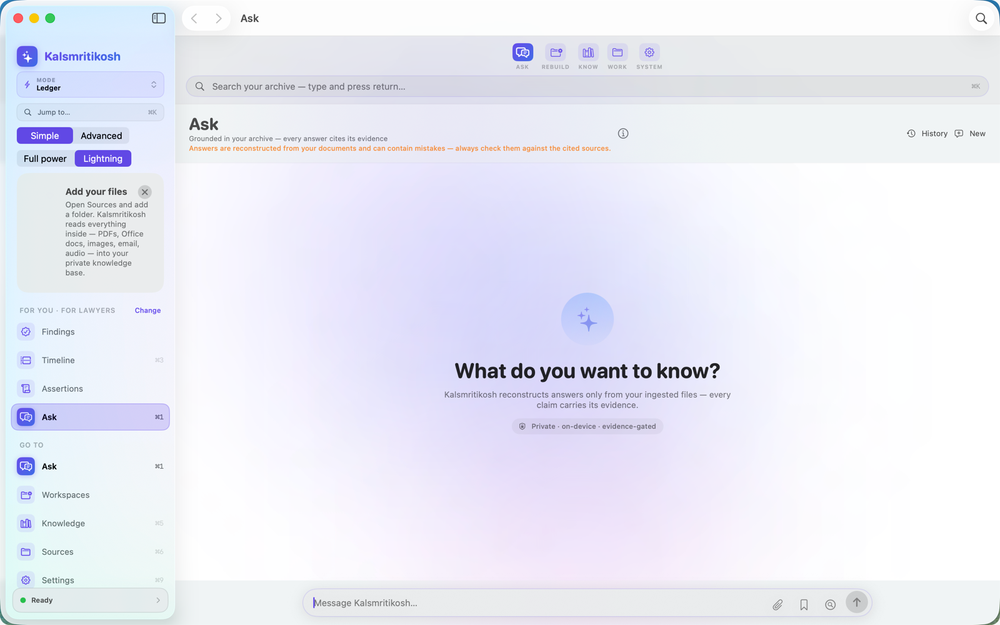
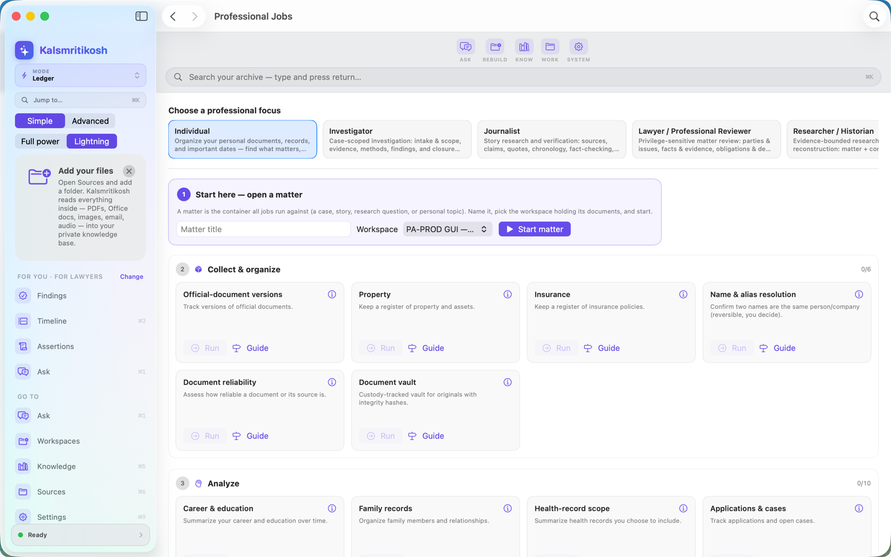
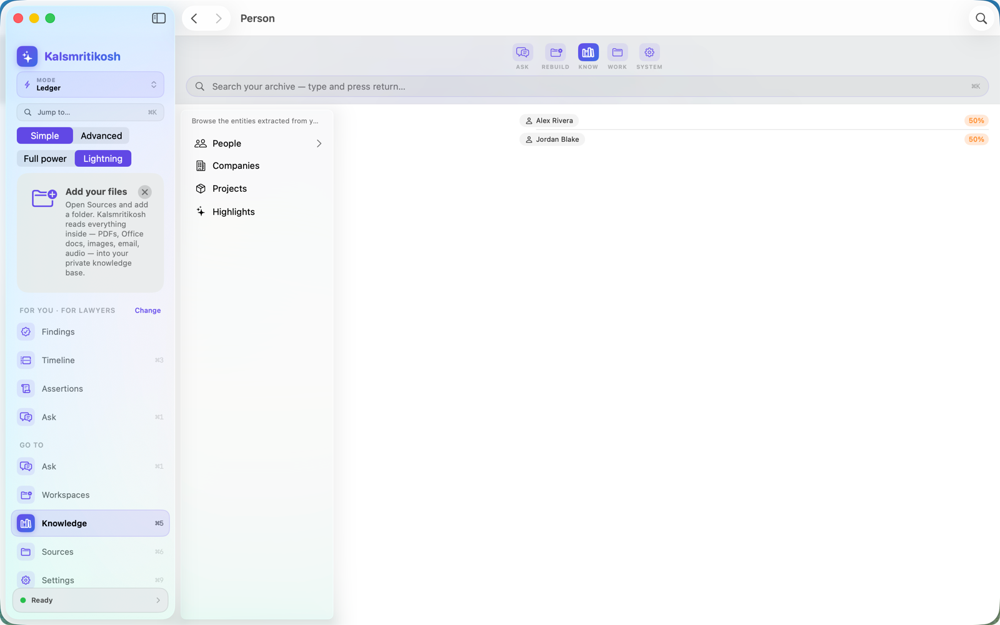
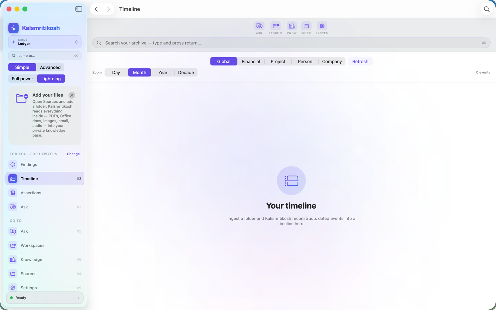
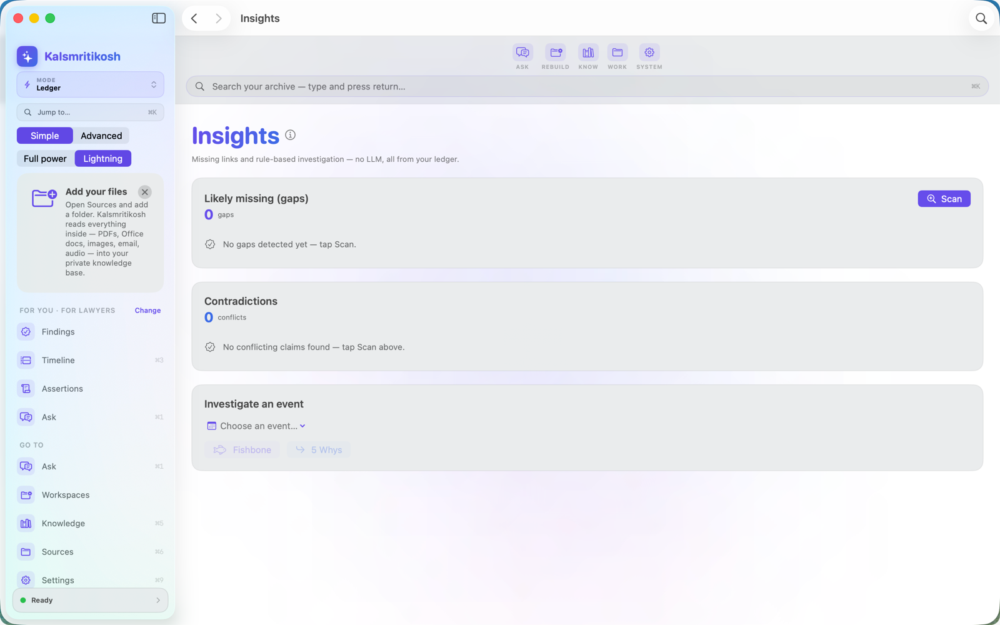
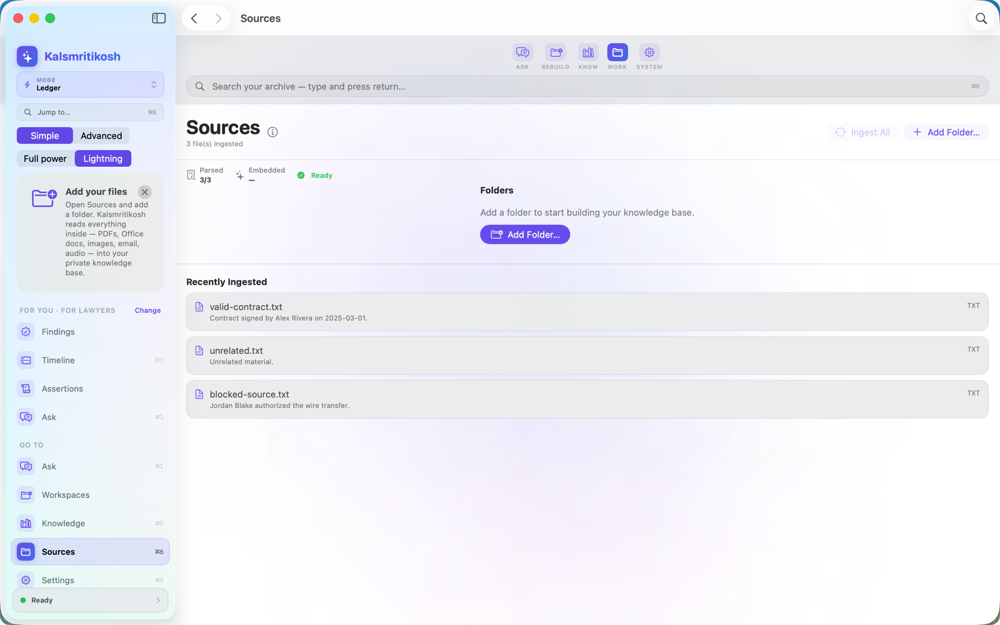
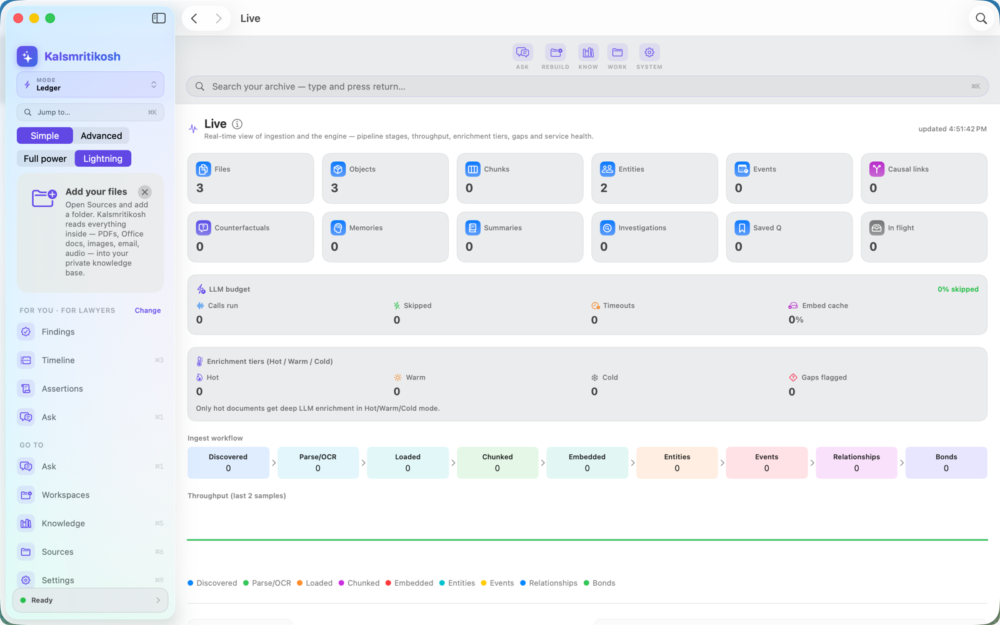
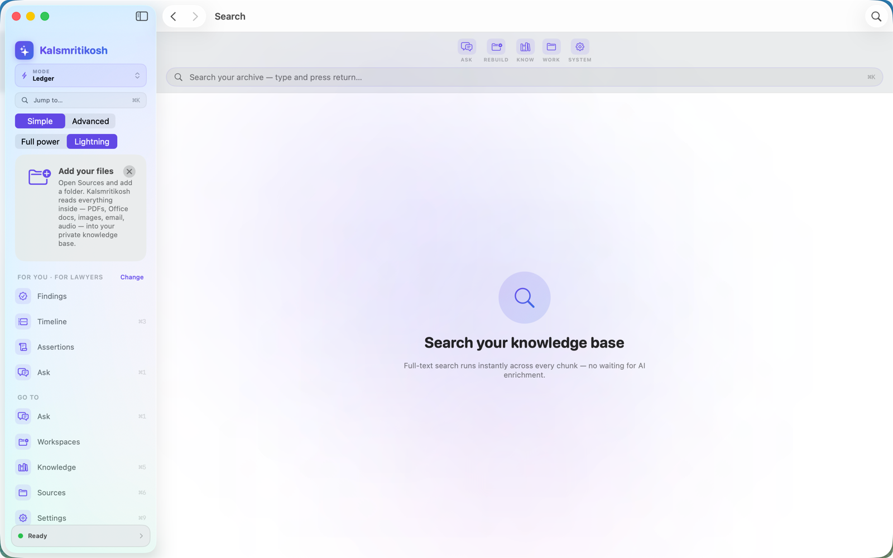
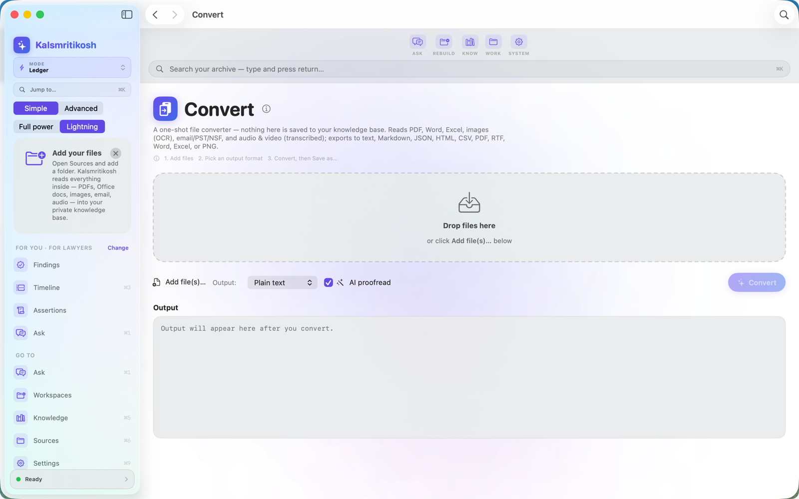
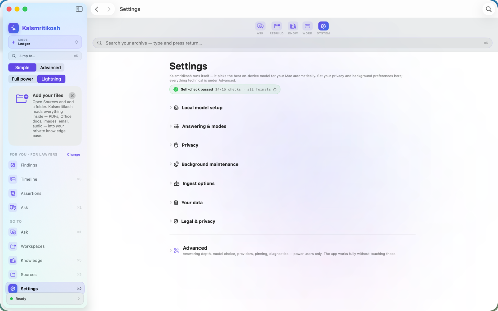

The answers you need are already sitting in your files — but the tools that could finally dig them out want your data in the cloud, and still invent facts you can't check. Kalsmritikosh exists to close that gap. Let's walk through it as three questions.
Question 1
Because there was no honest way to ask questions of your own private archive. Today's document AI has two problems — and between them sits a gap nobody was filling.
Users report document AIs inventing contract clauses that aren't there, attributing claims to a vague “Source 3” with no page you can cite, and never flagging when two sources disagree. Convincing — and sometimes confidently wrong.
On popular chatbots, uploaded files can be used to train the model by default, are retained for weeks, can be caught by legal holds, and have leaked in past breaches. Confidential work doesn't belong on someone else's servers.
The gap it fills: a place to ask your own documents that stays entirely on your Mac and refuses to guess — every answer tied to the exact evidence, so you can hand it the work you can't get wrong: the case, the claim, the report, the family history.
Question 2
It's an evidence ledger, not a chatbot. Instead of a model guessing from a chat window, the intelligence lives in a structured database it builds from your files — on your Mac, in three steps.
The three steps
Point it at a folder — PDFs, Word, Excel, email (EML/MBOX), scans, audio. It reads everything in place; nothing leaves your device.
Formats fall away. Everything becomes cited facts, dated events, people, and relationships in one structured, searchable store.
Ask in plain language. Get an answer with its evidence, a confidence read, and any conflicts — every line traceable to a source.
Why that design changes everything
Every claim is tied to the exact file, page, and byte range it came from. Click any citation to see the original — no hunting through a 40-page PDF.
An evidence gate decides: answer, water down, refuse, or show a conflict. If your documents don't support it, it tells you — instead of inventing a plausible clause.
When two documents disagree, you see both sides with their sources — the exact thing other tools quietly paper over.
Dated facts across your whole archive are reconstructed into one chronology — with honest markers for what's proven vs. inferred.
Turn findings into a work product — a chronology, a brief, a report — with the citations baked in. No walled garden.
Runs 100% on your Mac using Apple's on-device model. No account, no uploads, no analytics. Erase everything in one click.
Question 3
A lot — and most of it works instantly, with no AI at all. You choose the gear: lightning-fast and deterministic, or a private on-device AI when you want deeper answers. Here's the whole workbench, and exactly where each piece lives in the app.
Two ways to work, side by side
Times scale with your archive size and your Mac. Lightning is instant because it skips AI and embeddings; Full power is slower because it actually reads, extracts and cites every source. The app shows a live time estimate before any long task, and you can stop it anytime.
Everything you can do — and where to find it
Get to the answer in seconds.
See what happened, who's involved, how it connects.
Spreadsheets where every number proves itself.
Step-by-step work, tailored to your profession.
Ship work you can defend.
Across every matter you hold.
A look inside










Built for people who can't afford to be wrong
Pick your focus on first launch — the app speaks your profession's own language and tailors the workspace to the jobs you actually do.
Case chronology, privilege log, exhibit list, Bates-style document production — the document-review workflow big-firm platforms charge per-gigabyte for — free while we listen to early users. No processing fees, ever.
Subject workups, chain of custody, timeline & link analysis — who knew what, and when, with the gaps in the record made visible.
Work a referred claim file: red-flag worksheets (indicators, never proof), statement comparison, loss chronology, and a defensible SIU report.
Follow the money — funds tracing, tracing schedules where every amount drills to its source document, exhibit-ready expert reports.
Verify claims across a document dump — fact-check board, right of reply, the tick-tock — what's supported, what conflicts, what's missing.
Workplace investigations that stand up later: allegations tracked, statements compared, findings on the balance of probabilities.
PRISMA-style screening, source criticism, chronology & periodisation — reconstruct the past with honest uncertainty, not false precision.
Research to the Genealogical Proof Standard: a research log, citations that reopen their source, conflicting records resolved — and a written proof argument.
Research a video, podcast or newsletter: fact-check board, source vetting, guest background, and a source & rights locker — publish what holds up, and show your work.
Your private, searchable memory — emergency binder, legacy binder, important dates, and answers about your own documents.
Every workflow in Kalsmritikosh is a real profession's Standard Operating Procedure — encoded as enforced rules, not a template. The app cannot skip the steps a professional can't skip.
PRISMA 2020, GRADE, 8D, ACH, the Admiralty scale, FRCP 26, the Genealogical Proof Standard — each becomes gates: obligations, decisions reserved for a human, and conclusions the app refuses to assert.
Ten profession studios end in the actual hardcopy — a privilege log, an expert report, a fact-check memo with its right-of-reply log, a PRISMA/GRADE review — with a printed audit trail.
Every sealed run produces a conformance certificate naming the exact SOP version it satisfied — preserved with the run, and yours to include when you share. An in-app Compliance Board tracks each standard's current edition with periodic re-checks — and you can read every SOP the app binds itself to, on demand.
Standard names belong to their respective bodies; no affiliation, endorsement, or certification is implied. Workflows implement the developer's good-faith reading of published standards; conformance certificates attest to the app's encoded rules, not legal or regulatory compliance. Not legal or professional advice.
No servers. No accounts. No analytics or telemetry. No training on your data — because we never receive it.
Reading, search, and answers all run locally: the semantic-search models ship inside the app, and written answers use Apple's on-device model. The app makes no network connections at all — enforced by the macOS sandbox itself.
App Store privacy label: “Data Not Collected.” There's nothing for us to lose or leak.
One click erases the entire ledger. Your original files are never touched.
Honest, not hype.
| What matters | Kalsmritikosh | Cloud chatbots | Cloud “notebook” AIs |
|---|---|---|---|
| Runs fully on your device | Yes | No | No |
| Your files used for training | Never | By default on personal plans | Varies |
| Citation precision | File · page · line | Often none | Vague (“Source 3”) |
| Refuses when evidence is missing | Yes | Rarely | Rarely |
| Surfaces contradictions | Yes, both sides | No | No |
| Timeline reconstruction | Yes | No | No |
| Export with citations | Yes | Copy-paste | Limited |
| Works offline | Yes | No | No |
Comparison reflects publicly reported behaviour of popular cloud AI tools at time of writing; competitors' features change over time.
No. Your documents, the ledger built from them, your questions, and the answers all stay on your Mac. There's no account and no analytics.
Any AI can be. The difference is that Kalsmritikosh only answers from your documents, shows the exact evidence for every claim, flags conflicts, and refuses when the record doesn't support an answer — so you can verify in one click instead of trusting blindly.
PDF, Word, Excel/CSV, PowerPoint, EPUB, email (EML/MBOX), HTML, Markdown, text, and ZIP. Scans and images are read with on-device OCR; audio and video are transcribed on-device.
A Mac on macOS 15.6 or later. AI-written answers use Apple's on-device model (Apple Intelligence); you can still ingest, search, and view evidence without it.
Settings → Your data → “Delete all my data.” It erases the whole ledger instantly; your original files on disk are untouched.
Private. Cited. On your Mac.